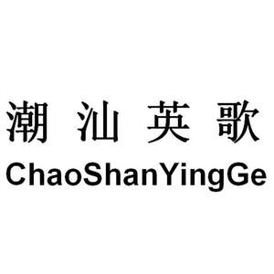

Trade Mark Journal No.2025/025 20 June 2025
UK00004214334 5 June 2025 (9,21,30,35,41)

- Class 9
- Downloadable mobile applications; Computer software, recorded; Smart glasses; Smart watches; Covers for tablet computers; Headphones; Mobile telephones; Holders adapted for mobile telephones and smartphones; Cases for smartphones; Portable media players; Batteries, electric; Battery chargers; Eyeglasses; Downloadable image files; Protective cases for tablet computers; Stands adapted for tablet computers; Screen protectors for mobile telephones; Lanyards for mobile telephones; Microphones; Smart speakers.
- Class 21
- Tea services [tableware]; Insulated mugs; Porcelain ware for household or kitchen use; utensils for household purposes; Glassware for household purposes; works of art of porcelain, ceramic, earthenware, terra-cotta or glass; drinking vessels; combs; toothbrushes; cosmetic utensils; fitted vanity cases; tableware, other than knives, forks and spoons; cooking utensils, non-electric; cups of paper or plastic; coffee services [tableware]; floss for dental purposes; Tissue box covers; oven mitts; Pet feeding containers; dustbins for household purposes.
- Class 30
- Tea; tea-based beverages; tea leaf; flowers or leaves for use as tea substitutes; coffee; coffee-based beverages; candies; honey; pastries; Moon cakes; zongzi; bread; biscuits; baozi; jiaozi; Instant noodles; rice; noodles; ice cream; condiments.
- Class 35
- Planning and conducting of trade fairs, exhibitions and presentations for commercial or advertising purposes; Administration of foreign business affairs; Organizing exhibitions for commercial or advertising purposes; sales promotion for others; provision of an online marketplace for buyers and sellers of goods and services; commercial administration of the licensing of the goods and services of others; Business management and organizational consulting; commercial intermediation services; personnel management consultancy; marketing; advertising; presentation of goods on communication media, for retail purposes; rental of advertising space; Advertising of movies; Production of video recordings for marketing purposes; marketing through product placement for others in virtual environments; influencer marketing; Film directing of advertising films; Providing business consulting services to enterprises; Sales promotion for others via short videos.
- Class 41
- Organization of exhibitions for cultural or educational purposes; Organization of cultural activities; multimedia library services; Film production; teaching; organization of competitions [education or entertainment]; organization of shows [impresario services]; publication of books; production of shows; providing recreation facilities; educational services; arranging and conducting of symposiums; organization of cosplay entertainment events; Organizing and arranging exhibitions for entertainment purposes; Organization of entertainment activities; providing online electronic publications, not downloadable; entertainment services; television entertainment; providing sports facilities; providing online videos, not downloadable.
Shenzhen Xintong International SME Brand Operator Co., Ltd.
Representative: Trademarkit LLP